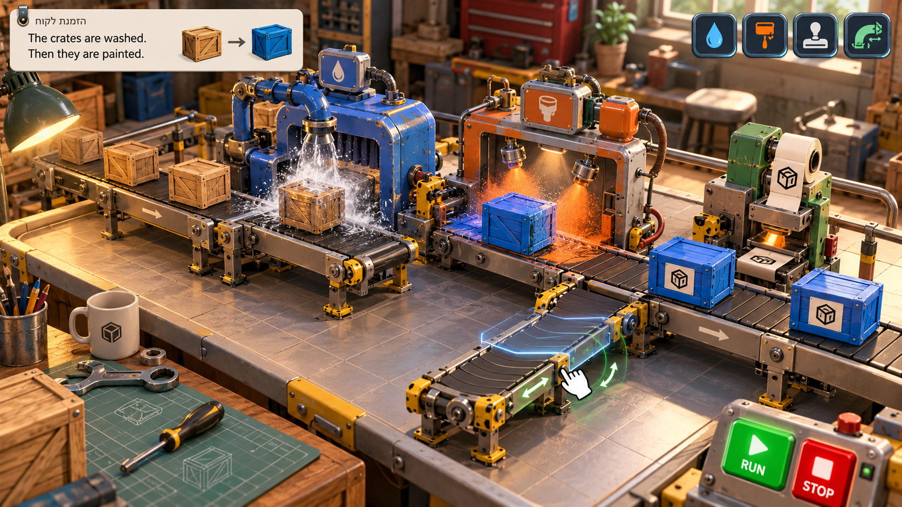
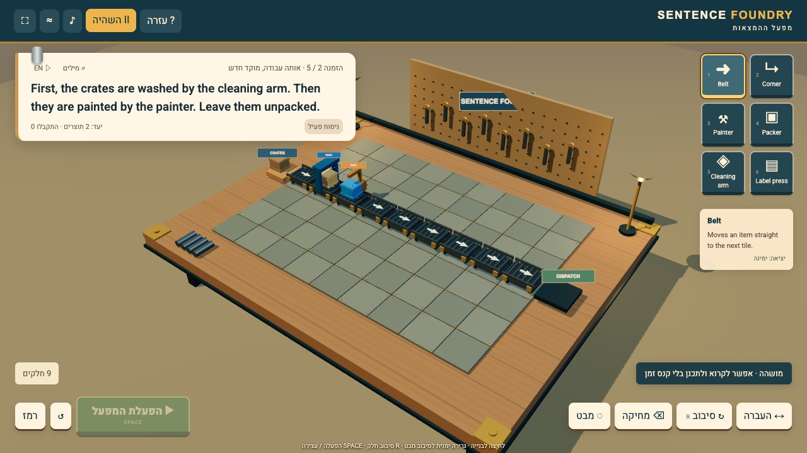
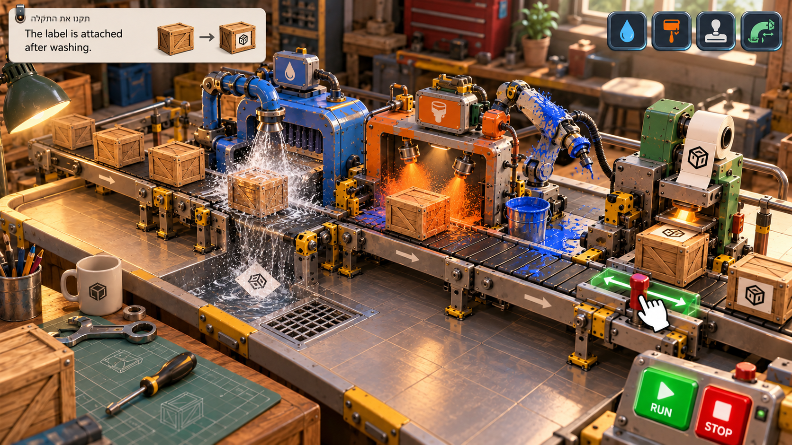
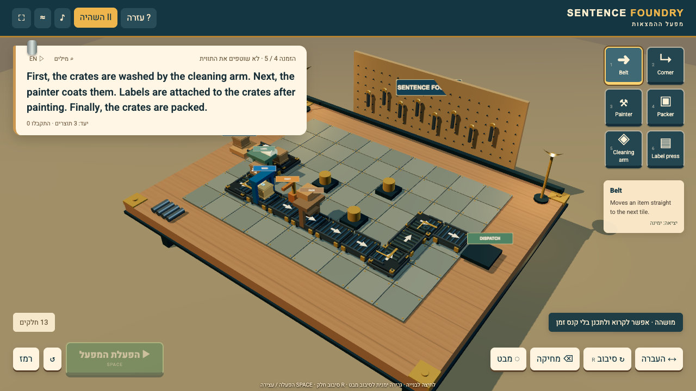

Concepts from built-in imagegen, compared with reachable1280×720 gameplay states built through actual UI controls. Required local Tripo integration remains open: the Mac is locked and Chrome exports are blocked. Current authored machine geometry is a development fallback.




The concept combines a painted spare arm and stripped paper. Actual receiver-switch evidence is recorded in separate contract captures. Rich curved Tripo silhouettes and final art comparison are still required.